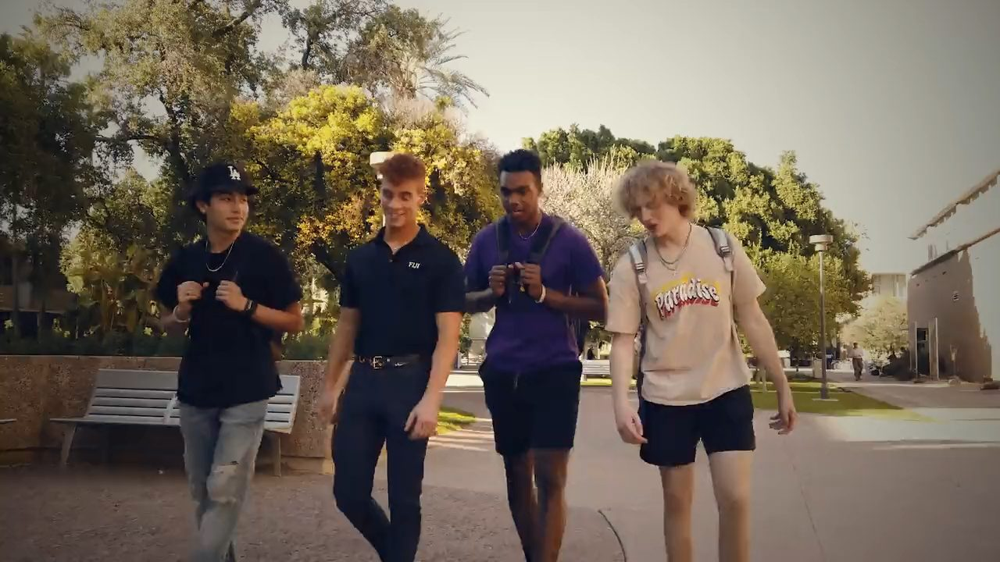
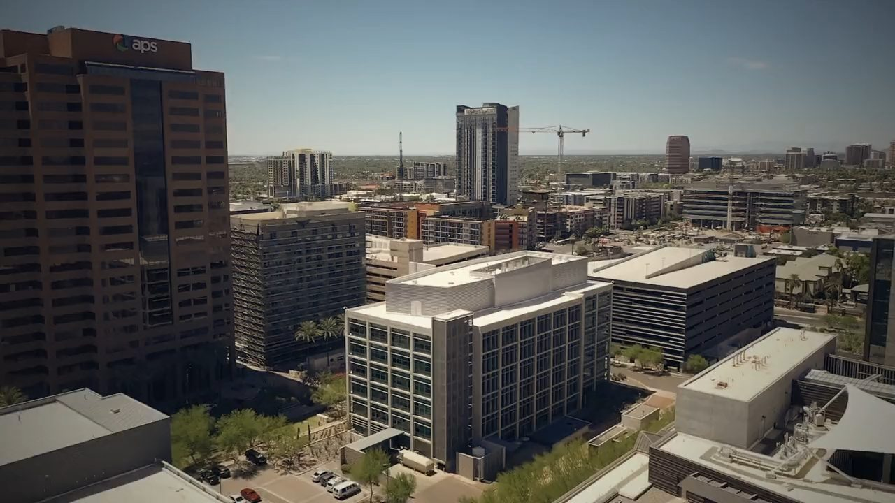
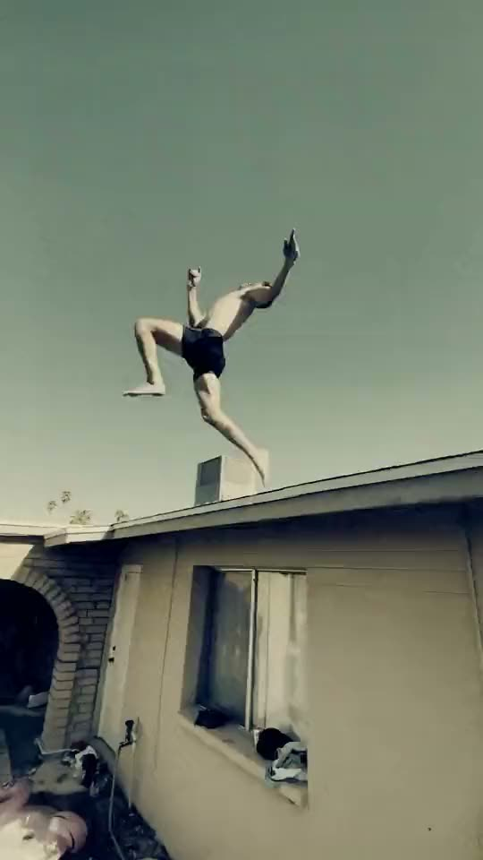
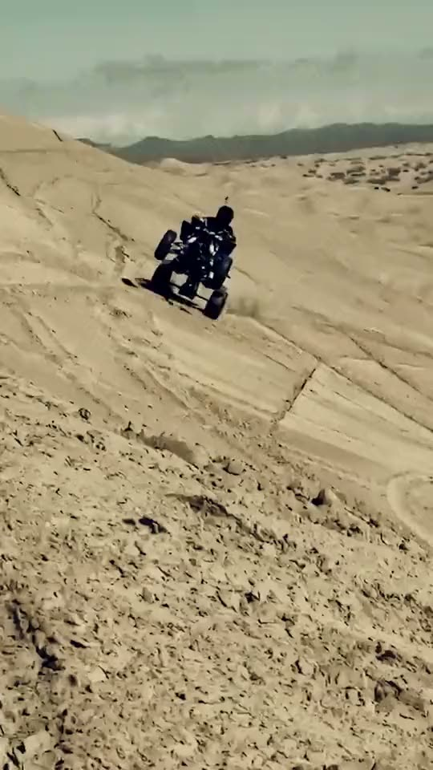
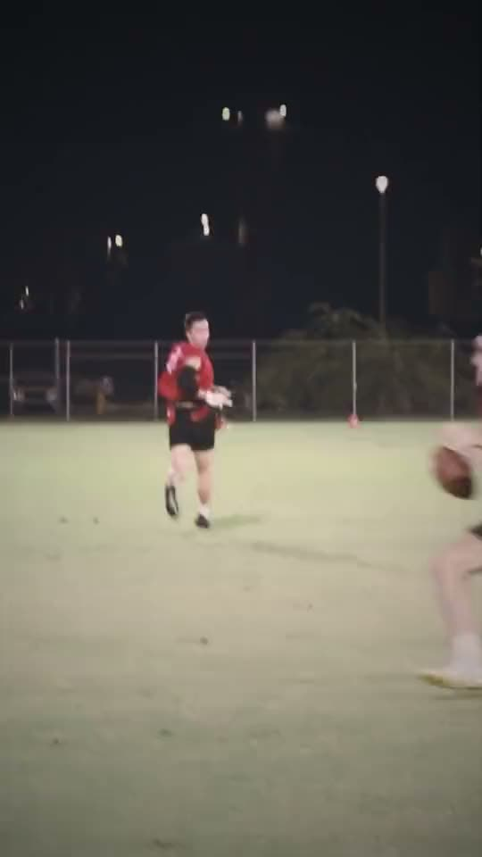
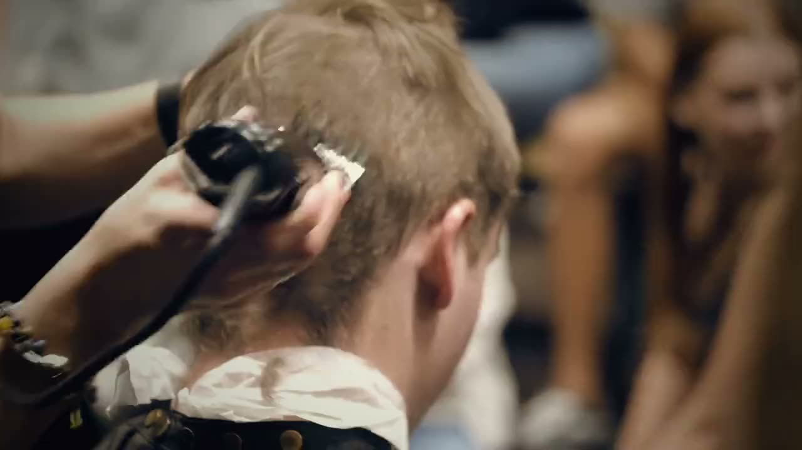
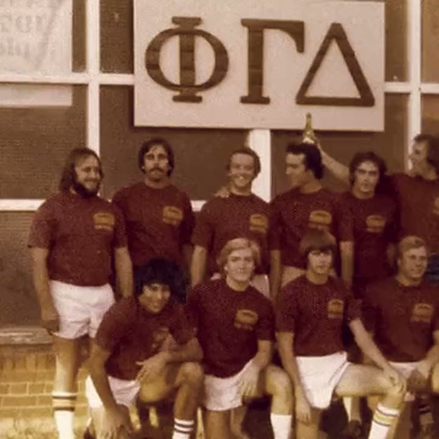

Persisting since 1965.
Phi Gamma Delta in Tempe, Arizona.

Brotherhood
FIJI calls friendship the sweetest influence.

Excellence
This summer, brothers interned at Microsoft.
A season at FIJI.




Service
Shave to Save raised over $56,000 for TGen.

Legacy
Founded in 1848, at Arizona State since 1965.